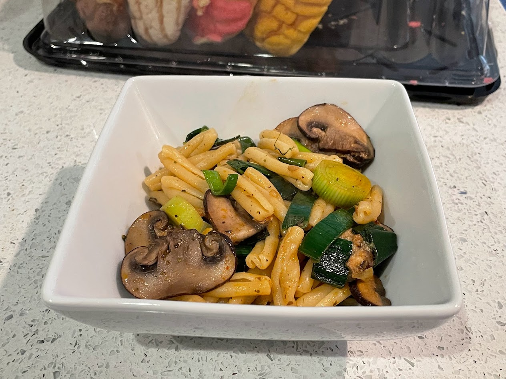

Mushroom and leek pasta

Pasta.
Ingredients
- Pasta or gnocchi
- Brown mushrooms
- Leeks (or asparagus, but I prefer leeks)
- Butter or olive oil
- Miso paste or salt
- Black pepper
- Italian seasoning (the dried herb mix)
- Smoked paprika
Instructions
Boil the pasta/gnocchi until done (or leave it slightly undercooked -- maybe only boil for around 5 minutes?), then drain that. Sauté the mushrooms and whatever other vegetables you want to throw in, then mix that with the pasta.